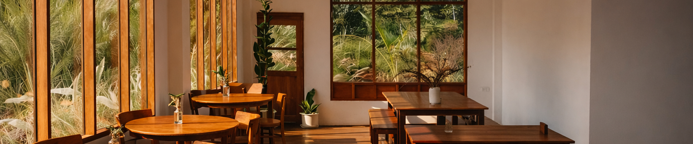

하루의 속도를 낮추는 공간
A MOMENT TO STAY
언제 어디서나 부담 없이 머물 수 있는 공간,
일상 속에 자연스럽게 스며드는 카페 Pause 입니다.
SPACE TO STAY
머물기 위해 설계된 공간

Designed
for
Staying
잠시 멈춰도 괜찮은 곳,
여기는 머무는 시간을 만듭니다.
공간은 단순히 머무는 장소가 아니라
하루의 밀도를 낮추는 장치라고 생각합니다.
빛과 소재, 거리와 여백까지모든 요소는 ‘쉼’을 기준으로 설계됩니다.
이곳에서는 서두를 필요가 없습니다.
짧은 대화도, 긴 생각도 자연스럽게 흐릅니다.
혼자여도 어색하지 않고함께여도 부담스럽지 않은 분위기를 만듭니다.
커피 한 잔이 완성되는 시간처럼공간 역시 천천히 경험되기를 바랍니다.
잠시 앉아 있는 것만으로도 충분한 곳,
Pause는 그렇게 머무는 순간을 디자인합니다.